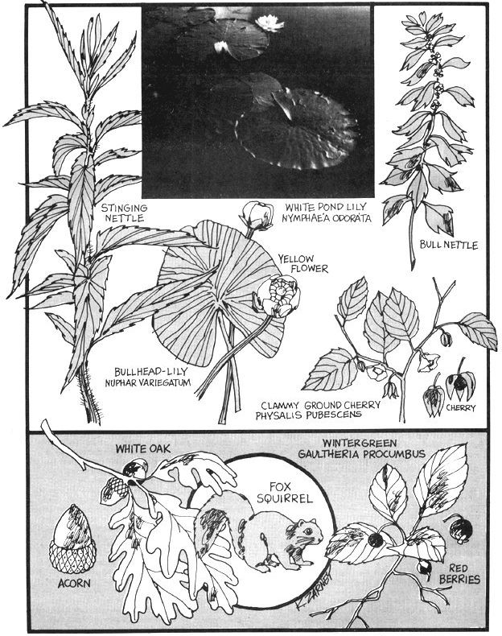

The pads of the pond lily float like green fairy rafts almost everywhere in the world that there's calm, placid water. That's a mighty handy fact to know, too, because the plant will furnish good, flavorful food for the forager from the time it emerges in the spring until it disappears under the ice in winter. If you can find the huge, spongy roots of this wild vegetable during zero weather, it'll even provide a satisfying meal then.
The white pond lily (Nymphaea odorata) and yellow pond lily (Nuphar variegatum) have pads that may be a foot in diameter. Large cells in the huge, ribbed leaves make the foliage spongy and buoyant enough to float on the water's surface. This foliage is both tender and tasty when properly prepared.
The stems beneath the lily pads are thick and the roots look like something you'd see sticking out of a foraging dinosaur's mouth. They can be six feet long, the size of a man's wrist and covered with a brown skin and "eyes". These eyes are the sprouting points for the plant's flower stems and leaf stalks. The stalks grow from the semicircular scars and the flower stems later develop on the stalks.
I harvest the leaves by wading out into a patch and pulling them loose, stalk and all. When I've gathered a half dozen of the large pads and stems I take 'em home and wash them very well. This cleansing is necessary since the plant is a favorite resting place for a considerable variety of insects and reptiles. Once the leaves are washed I cut them into pieces with a sharp knife and use them for pond lily soup, September stew (acorn, squirrel and pond lily fritters) . . . and, naturally, for greens. There's nothing wrong with pond lily leaves raw either, especially when you're munching the first tender pads of spring.
Pond lily leaves gathered anytime during the growing season (although, again, early spring growth is best of all) make good greens. Simply chop the pads into noodle-like strips and boil them in one change of water. The addition of a little bacon doesn't hurt a thing.
Steaming works very well with pond lily leaves too, and is usually the way we prepare this part of the vegetable. Older, tougher pads may require 20 minutes of the treatment before they're "just right" and ready to eat with a pat of butter and seasoning.
For a change of pace with these greens, we also like to cover a cup of chopped wild or domestic onion and two cups of chopped pond lily leaves with water and simmer them for twenty minutes. During the last five minutes we add a pat of butter and some whole grain bread crumbs. When you remove, drain and serve this dish, you can drink the juice or use it for pond lily soup. Backpackers will find that any of the freezedried onion mixes will work as well as boiled raw onions in this recipe, and everyone who tries the dish will soon discover that pond lilies get tougher and require longer cooking as the season progresses.
Pond lily soup will brighten any fall day. Start a kettleful by simmering a pound of deer or moose leg bone for an hour or until it starts to get tender. At that point, drop in a good-sized chunk of bacon to simmer along for about another hour. When all the meat is tender, remove it from the fire, cool and chop into inch-thick cubes. Put the chopped meat back in the liquid, slice a double handful of pond lily leaves and any other vegetable you might have and drop them into the stock. Cook until the leaves are tender, then season very well and serve piping hot.
Now it happens in September or October that all the ingredients for pond lily fritters are just waiting to be used by the food forager. The first ingredient and probably the hardest to find is squirrel meat. This isn't to imply that there aren't plenty of squirrels . . . it simply means that securing one is harder than picking a plant. A most sporting and timehonored way to do the job is by hiding very early in the morning in an oak or hickory thicket and waiting quietly until one shows up for harvest with a well-placed .22 bullet. Many folks (like me) who aren't sure of their aim use a shotgun while others (the real experts) gather bushytails with a slingshot or bow and arrow.
If it happens that you don't have a gun or other weapon and still want to catch a squirrel, there are other ways. One of the fastest is to take a pocketful of rocks and throw them at a squirrel in a tree until you either very luckily hit and stun him or - more likely - he gets scared and scampers into a hole.
If the hole is too hard to get close to, keep searching out squirrels until you have one in a hollow that you can get to. Then find a piece of barbed wire about four feet long and thread it into the opening until you touch the little varmint. When you feel the wire make contact, bend a handle on your end and twist until you have the squirrel's tail wrapped up. Then pull him out and dispatch him.
Now I know from experience that an army of animal "lovers" and misinformed conservationists are going to arise and smite me for mentioning this. Please remember, though - before you write - that I'm only trying to help homesteaders who honestly are endeavoring to forage food and need whatever help they can get.
When you have the squirrel, clean him by the method mentioned in an earlier issue of MOTHER . . . that is chop off the head, feet and tail and cut a slit across the skin in the middle of the back. Insert your forefingers in the slit and pull the halves of the hide away from each other and off the body. Then cut a slit from between the hind legs to between the front legs and pull out the intestines and organs. Cut the meat into quarters, wash or wipe off the blood and cool the chunks in the refrigerator or in cold water.
The acorn part of the stew can be picked up under oak trees almost anywhere in the world except the far north. Remember, however, that acorns have to be shelled, ground and boiled in at least three changes of water to make them sweet (see MOTHER NO. 3).
When you have acorns ground into flour, mix 1-1/4 cups of the meal with one teaspoon baking powder and 1/4 teaspoon salt and add enough water to make a sticky dough. Then divide the quarters of squirrel in half, salt and pepper the pieces and roll them in the acorn dough. Finally, take large pieces of pond lily leaf, parboil them in salted water for at least ten minutes and roll the batter-coated squirrel meat in individual wrappings of leaves. Place in a 350-degree oven for about one hour or until the meat is tender.
The leaf of the pond lily isn't the only part of the water vegetable that's good. The unopened buds - which are best before the flower starts to show - and the roots can be eaten also.
I enjoy the buds boiled a few minutes in salted water or steamed and served with melted butter or yogurt.
The flower buds can also be pickled. Pick and wash about a quart of the unopened blossoms and pack them into a mason jar. Heat to boiling a mixture of one cup apple cider vinegar, 1/4 cup salt and 1/2 teaspoon alum. Pour the solution over the buds, add water to fill the jars, throw in a pinch of dill if you have it and add a red pepper or two. Seal and let stand for about two months.
Pond lily buds, flowers and leaves can be wilted in vegetable oil or bacon grease also. Just cut them into bite-sized pieces and stir 'em around in hot grease until they're well-coated and turning brown at the edges.
As huge and abundant as lily leaves are, the underwater portion of the plant probably outdoes them in sheer mass. As mentioned before, the roots and stems are huge and long with a skin that looks like something left over from prehistoric times. When pulled up by storms, ice, beavers or muskrats they'll often float around until they finally lodge and start a new colony. Loose, floating pond lily roots can be used for food . . . but sometimes they're soft and half rotten so I always pull my own. A turtle hook works very well for this and, occasionally, the long tentacles come up as a bonus when I'm gathering lily leaves and stalks.
Now the interior of the pond lily's root is soft and spongy, but very clean and white. In fact it looks like it'd be good enough to eat as soon as it's peeled. Not so. Sections of the water vegetable's underpinnings do have to be peeled, of course . . . but even then- they're too bitter to eat.
Accordingly, the way to prepare a pond lily root is to, first, pull it up (easy) and, second, peel it (somewhat difficult due to its spongy and tough nature). I use a very sharp knife and still have to saw a bit to get the brown skin and the "eyes" shucked away.
When I'm down to white root, I cut it into thick slices and boil the pieces in several changes of water until the pulp loses its acrid taste. Adding vinegar to the water also helps neutralize the bitterness and prepare the sections of root for baking, french frying or floating in soup.
Baked pond lily root is made by half filling a medium-sized baking dish with the processed slices. Add a large double pat of butter. Sprinkle with 1/2 teaspoon salt and add 3/4 cup of water in which a potato has been boiled and mashed. Cover with parboiled pond lily leaves and bake at 375 degrees for about 25 minutes.
When I get tired of eating pond lily roots I'll probably look for some nettles before the frost has laid them low, because the common stinging nettle is one of the best plants to bring inside for "forcing" in the basement.
A nettle root is forced or grown inside by placing it in moist sand in the basement . . . and just waiting for it to send up its white stalk. This young shoot and its leaves are both very good and very nutritious . . . they can be eaten raw or cooked into any vegetable or meat stew that you might happen to be making. First, however, before we can plant it we must dig the root.
I try to spot this wild vegetable - which usually grows in a colony - after a fall rain. When I find one I cut the stalk off and dig up the good-sized root, surrounding dirt and all. The more soil that can be left on the underground portion of the plant, the sooner it'll start to grow in the basement. Figure on about a dozen of these starts for each person you intend to feed over the winter.
The nettle sprouts are pinched off when they're about four to six inches long and then are boiled for just a few minutes and served with a pat of butter . . . or they can be used in any good fall soup. We like to add one cup of the chopped shoots to two cups of beef stock, simmer for 20 minutes, add salt and pepper and eat hot with whole grain toast.
Planting the roots in boxes of sand in the basement, of course, is only one of many uses of the nettle. Early in the spring the young plants are very good greens and are packed with almost unbelievable amounts of vitamin C and vitamin A.
Now as most country people know, the nettle does possess sharp venom-tipped thorns that will raise welts on your skin at the slightest touch. The venom affects livestock also and it's very seldom that animals will eat green nettles. After it's cut and dried in hay, however, the plant makes very good fodder . . . and cooking changes the caustic acid in nettles into nourishing people food.
We pick nettle greens with gloves on and wash the spiny leaves by stirring them in a pan of cold water with a long-handled spoon (so we don't get stung by the venom). It sometimes takes a change of water to clean off all the clinging dust and insects. When the nettles are washed we drop them into a saucepan that has a closefitting lid, and boil them for two or three minutes in about 1/4 inch of water. They make their own juice so, if the fire isn't too hot, only a very little water is needed. When the greens are cooked, we serve them with a pat of butter and drink all the juice that's left when we drain them.
Nettle is also good when cooked with other greens - such as sour dock (Rumex crispus ) - to give a variety of flavors. The good thing about using these two in combination is that the juice from sour dock seems to have a beneficial effect when rubbed on the welts that will surely develop if you accidently touch the nettles. Of course the caustic acid that generates the swelling will be neutralized in a few minutes by the body anyway . . . so sooner or later - sour dock or no - the welts are bound to disappear.
Another dish that can be made with young spring nettles or the shoots forced in your basement is nettle pudding. Wash, chop and cook one heaping cup of nettle greens. Add one large, chopped onion or a half cup of wild onions. Process a cup of milkweed flower buds by boiling them in two changes of water for one minute each time. Add the buds to the nettle mixture. Then for flavor and body mix together 1-1/2 cups of ground deer meat (hamburger will do) and three slices of diced bacon and add to the pudding fixin's. Season with 1/8 teaspoon of salt and a good sprinkling of sage. Tie the mixture into a clean, white cloth and boil for about an hour in a large kettle. Serve with milk gravy or butter.
The nettle has other uses too. Fibers from the plant can be made into one of the finest cloths. Also, it's a wonderful herb for curing scurvy and vitamin A deficiency. The ancient herbalists used nettles as a remedy for rheumatism, poisoning. from other plants and a long list of assorted ills. The good old nettle, then, deserves recognition for things other than just the skin rash it produces on unwary folks. Paradoxically, a plant that has a well-known flavor but is almost unknown itself is wintergreen.
Wintergreen (Gaultheria procumbens), checkerberry, teaberry, mountainberry and partridgeberry are all local names for small, shrubby, recumbent plant that sends up little, hear shaped green leaves and a fruiting sprig from a slender stem that creeps among - sometimes under and sometimes on top of the leaves. Later in the year the sprig will bear bright red berries. All of the plant - the leaves, the twigs, and the fruit - contains wintergreen oil . . . the flavoring that's used in candy, toothpaste, food and a host of other products. By some strange quirk of nature this is the same oil that's contained in the huge black birch (Betula lenta) tree that was described in an earlier issue of MOTHER.
One of the chief uses of wintergreen is the tea made from the plant. We brew ours by picking the leaves after they've turned red and then drying them . . . September and October is a good time for this. When they've cured we grind a quart of the leaves and place them in a jar. Then we cover the powder with a quart of boiling water, seal the container and let it stand in the warm house for two days. The longer it sets the stronger the tea, and the redder the leaves the pinker the liquid will be.
This tea can be drunk warm or cool but if we heat it we're very careful not to boil the solution since that seems to make it lose most, if not all of its flavor. Most people like to strain the "grounds" out but I find I like the taste enough to swallow them along with the liquid. Nothing . . . but nothing cures a headache for me as fast as a good, warm cup of wintergreen tea, swallowed grounds and all. Wintergreen tea is also very refreshing and warming to the body.
A pink wine can be made from this tea by stirring four pounds of honey into three gallons of the strained brew in a stone crock. Add a cake of yeast and let the tea ferment for about two weeks under a cloth. When it quits bubbling, siphon the liquid off into bottles. Cap the containers tightly and let the concoction age for about a month . . . longer if you have the patience. Chill and serve.
Wintergreen berries have a very delightful, cool taste that goes really well in flavored gelatin or eaten in a delicious yogurt.
This yogurt is made by substituting wintergreen tea for the water that would normally be used to dissolve the powdered milk. It's well to add a teaspoonful of liquified gelatin to each cup of the yogurt mix also. Otherwise, proceed as usual, slip in a little honey or other sweetener if you desire and eat the dish as a snack or dessert.
Another plant that makes a fine dessert is the ground cherry (Physalis pubescens). The ground cherry is a sprawling plant that usually doesn't get over eight inches high. It's almost indistinguishable from a multitude of other weeds until late summer or fall when it bears its fruit in a Chinese lantern type of husk. This husk is almost always straw-colored and is very often found growing in bunches. Eaten alone, ground cherries are a little too sweet for me to enjoy so I combine them with hazelnuts for a raw dessert that'll make almost anyone smack their lips.
Pick, husk and wash about a quart of ground cherries. Set the blender at its lowest speed, drop the cherries in and chop them for a few seconds. Remove and replace with a pint of hazelnut meats that you've picked and shelled. Chop the nuts in the blender for a few seconds, mix them with the chopped cherries, add chilled milk, a very little cinnamon and stir very well. Place the mixture back in the refrigerator, chill and serve very cool. That's good eatin'.
|
 |
|
|